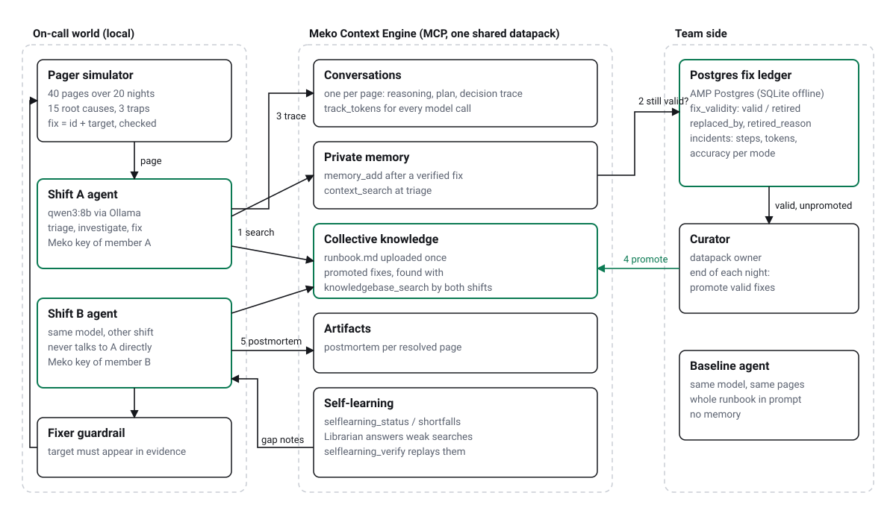

On-call agents that never solve the same incident twice,
even when the other shift solved it.
Repeat pages solved in half the steps and 42% of the tokens of a wiki holding every on-call note, at nearly its accuracy;
the Postgres ledger cuts wrong fixes 27–52% against memory alone
Built on the Meko Context Engine · ContextCon Theme 02
Shift A fixes the 2 a.m. page. The fix lives in their own notes.
Shift B gets the same page the next night and starts from the wiki again.
And sometimes a remembered fix stops working, but people keep applying it.

{{RES_NOTE}}
Simulator, agents, ledger, replay dashboard and every recorded run.
Local qwen3:8b · Meko MCP · Postgres. No paid model API.